Goods cross borders blind.
A container of coffee leaves a farm in Brazil, ships from Rio to Miami and ends with a buyer in the US. Five companies hold it on the way, and each keeps its own records.
Who has it right now?
When cargo goes missing, every company says it handed over fine. Nobody can prove otherwise.
Both hands sign.
At every handover, the company giving the cargo and the one receiving it both confirm. The record is saved where no one can edit it.
A token proves who owns the goods. Not who holds them.
A token on Stellar says who owns a container, not who is holding it. On the rail, each shipment gets a custody record that names its token: every handover signed by both companies, readable by anyone. A lender can check who signed last before paying.
The contract is open source: any tokenized Stellar asset can carry a custody record.
Plug in once.
A port or an airport keeps its own software. One adapter connects it to everyone on the rail.
Try it. Pass the coffee.
Each company has a wallet. Tap both to sign the handover (a practice run: nothing is sent). The coffee only moves when both have signed.
In the product, buyers, insurers and lenders subscribe and read every handover as data. On the test network the record is public.
GET /api/shipments/31b4cff7…a5e37
- status
- Delivered
- current_custodian
- Buyer
- route
- Warehouse → Trucker → Ship → Customs → Buyer
- seq
- 4
Check it yourself.
This is the real record of a test shipment, read live from Stellar. It answers three questions: where is the coffee now, who signed each handover, and has anyone changed the record since.
No account and no login: anyone can run this check.
1 Where the coffee is now
2 Every handover, signed by both companies
The names are test companies on Stellar's test network.
- Loading…
3 Check that nobody changed it
A fingerprint is a short code computed from the whole history: change anything and the code changes. Your browser rebuilds it from every step and compares it with the one stored on Stellar.
Token issuance and burn use Radox's transfer_agent contract, built before the event. The custody_registry contract, the scripts and this page were built at HackMeridian. Open source, Apache-2.0 · llms.txt · Icons: Lucide (ISC).
Rio–Miami first. Every lane next.
Radox is the technology team of the International Service Zone (ZIS), the Rio–Miami trade program, with the Brazilian Chamber of Commerce, Industry and Services (Cisbra) and the Latin Chamber of Commerce of the USA (Camacol). Every port and airport in the program will connect through this rail.

ZISEach company pays a subscription plus a fee per shipment, the way banks pay for SWIFT.
Built on

Build on it.
The rail has an open API on Stellar. Read any shipment, on mainnet or testnet, or run your own in the testnet sandbox, with no sign-up. Production use is by request.
The registry is live on mainnet. Its first shipment: 4 handovers, each signed by both companies.
$ API=https://rio-miami-rail.vercel.app/api $ DEMO=31b4cff785831659b4ecb8fd3e7382f9760a12ef45ef7eb30f45b3b6911a5e37 $ curl -s $API/shipments/$DEMO { "network": "testnet", "source": "live", "shipment": { "status": "Delivered", "current_custodian": "GAG5WGRM…DA35P7", "seq": 4, "head": "2d74fec0…83195414", … } } # sandbox: your own shipment, signed on testnet $ KEY=$(curl -s -X POST $API/sandbox/shipments | jq -r .shipment.key) $ for i in 1 2 3 4; do curl -s -X POST $API/sandbox/shipments/$KEY/handover; done $ curl -s -X POST $API/sandbox/shipments/$KEY/deliver # mainnet: the first shipment $ curl -s "$API/shipments/5dc2e39a…25656b2d?network=mainnet" { "network": "mainnet", "shipment": { "status": "Delivered", "seq": 4, … } } $